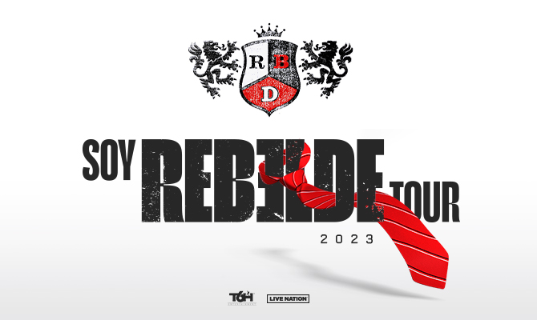

RBD COMEBACK
Prepara tu corbata, volveremosA maior banda da América Latina esta de volta...
Surgido em 2004 dentro da telenovela Rebelde, o grupo seguiu com sucesso após o fim da trama em 2006. Entre alguns dos êxitos do grupo estão canções como Rebelde, Solo Quédate En Silencio, Sálvame, Nuestro Amor, No Pares, Ser o Parecer, Celestial, Bésame Sin Miedo, Tu Amor, Inalcanzable, Empezar Desde Cero, e Para Olvidarte De MÍ. O grupo é considerado o mais bem-sucedido da história da música pop mexicana por ter conquistado reconhecimento fora da América Latina (tendo chegado até mesmo à países da Ásia e Europa). Prova disso são os recordes de público em concertos nos Estados Unidos, Brasil, Eslovênia, Romênia, Espanha, Chile, Equador, entre outros. Fora isso, a marca RBD tem produtos como bonecas, produtos para higiene e alimentos, além de uma revista editada no México, Romênia, Espanha e Brasil.
Rebelde, novela mexicana produzida pela Televisa, foi um remake da novela argentina Rebelde Way. A trama foi adaptada para o público mexicano, e foi exibida entre 4 de outubro de 2004 e 2 de Junho de 2006, tendo três temporadas. Os atores que formavam, na novela, o RBD, Alfonso, Anahí, Christian, Christopher, Dulce e Maite, interpretaram as canções-tema do programa, algo comum no México. Inclusive, alguns dos membros já vinham de grupos musicais ou carreiras-solo bem sucedidas, como Anahí e Dulce María. O primeiro CD, Rebelde, foi lançado em dezembro de 2004, e marcou o primeiro sucesso fonográfico do grupo. No ano de 2005, a novela Rebelde começou a ser exibida no Brasil. O sucesso foi imediato, e as canções da novela ganharam versões em português, cantadas pelos próprios, traduzidas por Cláudio Rabello. As duas versões do CD venderam, juntas, 500 mil cópias em um mês, recebendo um disco de diamante no Brasil. Simultâneamente, a novela era exibida em canais latinos nos Estados Unidos, e o CD Rebelde chegou ao mercado norte-americano, chegando ao segundo lugar da parada dos discos latinos. No total Rebelde vendeu mais de 2,7 milhões no mundo. Este CD, foi o primeiro do grupo a ser gravado por eles mesmos também em português, chamado Rebelde – Edição Brasil.